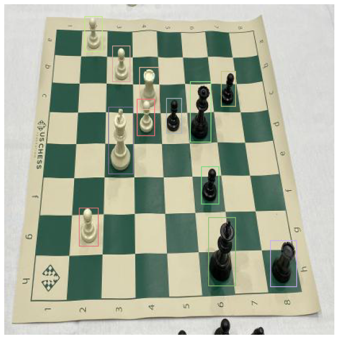
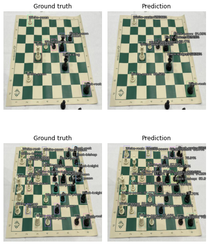

Custom Parser - Simple
Installing IceVision and IceData
If on Colab run the following cell, else check the installation instructions
Install from pypi...
# Torch - Torchvision - IceVision - IceData - MMDetection - YOLOv5 - EfficientDet Installation
!wget https://raw.githubusercontent.com/airctic/icevision/master/icevision_install.sh
# Choose your installation target: cuda11 or cuda10 or cpu
!bash icevision_install.sh cuda11
... or from icevision master
# # Torch - Torchvision - IceVision - IceData - MMDetection - YOLOv5 - EfficientDet Installation
# !wget https://raw.githubusercontent.com/airctic/icevision/master/icevision_install.sh
# # Choose your installation target: cuda11 or cuda10 or cpu
# !bash icevision_install.sh cuda11 master
# Restart kernel after installation
import IPython
IPython.Application.instance().kernel.do_shutdown(True)
{'restart': True, 'status': 'ok'}
Imports
As always, let's import everything from icevision. Additionally, we will also need pandas (you might need to install it with pip install pandas).
from icevision.all import *
import pandas as pd
Download dataset
We're going to be using a small sample of the chess dataset, the full dataset is offered by roboflow here
data_url = "https://github.com/airctic/chess_sample/archive/master.zip"
data_dir = icedata.load_data(data_url, 'chess_sample') / 'chess_sample-master'
Understand the data format
In this task we were given a .csv file with annotations, let's take a look at that.
Important
Replace source with your own path for the dataset directory.
df = pd.read_csv(data_dir / "annotations.csv")
df.head()
| filename | width | height | label | xmin | ymin | xmax | ymax | |
|---|---|---|---|---|---|---|---|---|
| 0 | 0.jpg | 416 | 416 | black-bishop | 280 | 227 | 310 | 284 |
| 1 | 0.jpg | 416 | 416 | black-king | 311 | 110 | 345 | 195 |
| 2 | 0.jpg | 416 | 416 | black-queen | 237 | 85 | 262 | 159 |
| 3 | 0.jpg | 416 | 416 | black-rook | 331 | 277 | 366 | 333 |
| 4 | 0.jpg | 416 | 416 | black-rook | 235 | 3 | 255 | 51 |
At first glance, we can make the following assumptions:
- Multiple rows with the same filename, width, height
- A label for each row
- A bbox [xmin, ymin, xmax, ymax] for each row
Once we know what our data provides we can create our custom Parser.
Create the Parser
The first step is to create a template record for our specific type of dataset, in this case we're doing standard object detection:
template_record = ObjectDetectionRecord()
Now use the method generate_template that will print out all the necessary steps we have to implement.
Parser.generate_template(template_record)
class MyParser(Parser):
def __init__(self, template_record):
super().__init__(template_record=template_record)
def __iter__(self) -> Any:
def __len__(self) -> int:
def record_id(self, o: Any) -> Hashable:
def parse_fields(self, o: Any, record: BaseRecord, is_new: bool):
record.set_filepath(<Union[str, Path]>)
record.set_img_size(<ImgSize>)
record.detection.set_class_map(<ClassMap>)
record.detection.add_labels(<Sequence[Hashable]>)
record.detection.add_bboxes(<Sequence[BBox]>)
We can copy the template and use it as our starting point. Let's go over each of the methods we have to define:
-
__init__: What happens here is completely up to you, normally we have to pass some reference to our data,data_dirin our case. -
__iter__: This tells our parser how to iterate over our data, each item returned here will be passed toparse_fieldsaso. In our case we calldf.itertuplesto iterate over alldfrows. -
__len__: How many items will be iterating over. -
imageid: Should return aHashable(int,str, etc). In our case we want all the dataset items that have the samefilenameto be unified in the same record. -
parse_fields: Here is where the attributes of the record are collected, the template will suggest what methods we need to call on the record and what parameters it expects. The parameteroit receives is the item returned by__iter__.
Important
Be sure to pass the correct type on all record methods!
class ChessParser(Parser):
def __init__(self, template_record, data_dir):
super().__init__(template_record=template_record)
self.data_dir = data_dir
self.df = pd.read_csv(data_dir / "annotations.csv")
self.class_map = ClassMap(list(self.df['label'].unique()))
def __iter__(self) -> Any:
for o in self.df.itertuples():
yield o
def __len__(self) -> int:
return len(self.df)
def record_id(self, o) -> Hashable:
return o.filename
def parse_fields(self, o, record, is_new):
if is_new:
record.set_filepath(self.data_dir / 'images' / o.filename)
record.set_img_size(ImgSize(width=o.width, height=o.height))
record.detection.set_class_map(self.class_map)
record.detection.add_bboxes([BBox.from_xyxy(o.xmin, o.ymin, o.xmax, o.ymax)])
record.detection.add_labels([o.label])
Let's randomly split the data and parser with Parser.parse:
parser = ChessParser(template_record, data_dir)
train_records, valid_records = parser.parse()
0%| | 0/109 [00:00<?, ?it/s]
[1m[1mINFO [0m[1m[0m - [1m[34m[1mAutofixing records[0m[1m[34m[0m[1m[0m | [36micevision.parsers.parser[0m:[36mparse[0m:[36m122[0m
0%| | 0/7 [00:00<?, ?it/s]
Let's take a look at one record:
show_record(train_records[0], display_label=False, figsize=(14, 10))

train_records[0]
BaseRecord
# Transforms
# size is set to 384 because EfficientDet requires its inputs to be divisible by 128
image_size = 384
train_tfms = tfms.A.Adapter([*tfms.A.aug_tfms(size=image_size, presize=512), tfms.A.Normalize()])
valid_tfms = tfms.A.Adapter([*tfms.A.resize_and_pad(image_size), tfms.A.Normalize()])
# Datasets
train_ds = Dataset(train_records, train_tfms)
valid_ds = Dataset(valid_records, valid_tfms)
# Show an element of the train_ds with augmentation transformations applied
samples = [train_ds[0] for _ in range(3)]
show_samples(samples, ncols=3)
common:
- Filepath: /root/.icevision/data/chess_sample/chess_sample-master/images/6.jpg
- Img: None
- Image size ImgSize(width=416, height=416)
- Record ID: 6.jpg
detection:
- Class Map: <ClassMap: {'background': 0, 'black-bishop': 1, 'black-king': 2, 'black-queen': 3, 'black-rook': 4, 'black-pawn': 5, 'black-knight': 6, 'white-queen': 7, 'white-rook': 8, 'white-king': 9, 'white-bishop': 10, 'white-knight': 11, 'white-pawn': 12}>
- Labels: [8, 9, 12, 12, 12, 12, 2, 4, 3, 5, 5, 5]
- BBoxes: [<BBox (xmin:170, ymin:79, xmax:195, ymax:132)>, <BBox (xmin:131, ymin:129, xmax:162, ymax:213)>, <BBox (xmin:167, ymin:119, xmax:189, ymax:165)>, <BBox (xmin:136, ymin:52, xmax:158, ymax:97)>, <BBox (xmin:101, ymin:15, xmax:123, ymax:59)>, <BBox (xmin:94, ymin:256, xmax:118, ymax:304)>, <BBox (xmin:257, ymin:268, xmax:291, ymax:354)>, <BBox (xmin:335, ymin:297, xmax:368, ymax:355)>, <BBox (xmin:234, ymin:97, xmax:260, ymax:173)>, <BBox (xmin:273, ymin:84, xmax:291, ymax:128)>, <BBox (xmin:204, ymin:118, xmax:223, ymax:162)>, <BBox (xmin:248, ymin:204, xmax:270, ymax:251)>]

Models
We've selected a few of the many options below. You can easily pick which libraries, models, and backbones you like to use.
# Just change the value of selection to try another model
selection = 0
extra_args = {}
if selection == 0:
model_type = models.mmdet.vfnet
backbone = model_type.backbones.resnet50_fpn_mstrain_2x
if selection == 1:
model_type = models.mmdet.retinanet
backbone = model_type.backbones.resnet50_fpn_1x
elif selection == 2:
model_type = models.mmdet.faster_rcnn
backbone = model_type.backbones.resnet50_fpn_1x
# extra_args['cfg_options'] = {
# 'model.bbox_head.loss_bbox.loss_weight': 2,
# 'model.bbox_head.loss_cls.loss_weight': 0.8,
# }
elif selection == 3:
# The Retinanet model is also implemented in the torchvision library
model_type = models.torchvision.retinanet
backbone = model_type.backbones.resnet50_fpn
elif selection == 4:
model_type = models.ross.efficientdet
backbone = model_type.backbones.tf_lite0
# The efficientdet model requires an img_size parameter
extra_args['img_size'] = image_size
elif selection == 5:
model_type = models.ultralytics.yolov5
backbone = model_type.backbones.small
# The yolov5 model requires an img_size parameter
extra_args['img_size'] = image_size
model_type, backbone, extra_args
# Instantiate the model
model = model_type.model(backbone=backbone(pretrained=True), num_classes=len(parser.class_map), **extra_args)
# Data Loaders
train_dl = model_type.train_dl(train_ds, batch_size=8, num_workers=4, shuffle=True)
valid_dl = model_type.valid_dl(valid_ds, batch_size=8, num_workers=4, shuffle=False)
(<module 'icevision.models.mmdet.models.vfnet' from '/usr/local/lib/python3.7/dist-packages/icevision/models/mmdet/models/vfnet/__init__.py'>,
<icevision.models.mmdet.models.vfnet.backbones.resnet_fpn.MMDetVFNETBackboneConfig at 0x7f3d3eefcf50>,
{})
Training
metrics = [COCOMetric(metric_type=COCOMetricType.bbox)]
Training using fastai
learn = model_type.fastai.learner(dls=[train_dl, valid_dl], model=model, metrics=metrics)
learn.lr_find()
/usr/local/lib/python3.7/dist-packages/mmdet/core/anchor/anchor_generator.py:324: UserWarning: ``grid_anchors`` would be deprecated soon. Please use ``grid_priors``
warnings.warn('``grid_anchors`` would be deprecated soon. '
/usr/local/lib/python3.7/dist-packages/mmdet/core/anchor/anchor_generator.py:361: UserWarning: ``single_level_grid_anchors`` would be deprecated soon. Please use ``single_level_grid_priors``
'``single_level_grid_anchors`` would be deprecated soon. '
SuggestedLRs(valley=3.0199516913853586e-05)

learn.fine_tune(40, 1e-4, freeze_epochs=1)
| epoch | train_loss | valid_loss | COCOMetric | time |
|---|---|---|---|---|
| 0 | 1.581739 | 1.825835 | 0.196081 | 00:01 |
/usr/local/lib/python3.7/dist-packages/mmdet/core/anchor/anchor_generator.py:324: UserWarning: ``grid_anchors`` would be deprecated soon. Please use ``grid_priors``
warnings.warn('``grid_anchors`` would be deprecated soon. '
/usr/local/lib/python3.7/dist-packages/mmdet/core/anchor/anchor_generator.py:361: UserWarning: ``single_level_grid_anchors`` would be deprecated soon. Please use ``single_level_grid_priors``
'``single_level_grid_anchors`` would be deprecated soon. '
| epoch | train_loss | valid_loss | COCOMetric | time |
|---|---|---|---|---|
| 0 | 1.581900 | 1.786651 | 0.216952 | 00:01 |
| 1 | 1.608743 | 1.763155 | 0.224355 | 00:01 |
| 2 | 1.631124 | 1.756258 | 0.224446 | 00:01 |
| 3 | 1.605482 | 1.744663 | 0.221207 | 00:01 |
| 4 | 1.601004 | 1.733463 | 0.225954 | 00:01 |
| 5 | 1.602483 | 1.737170 | 0.227496 | 00:01 |
| 6 | 1.585189 | 1.726894 | 0.230818 | 00:01 |
| 7 | 1.569807 | 1.705676 | 0.242893 | 00:01 |
| 8 | 1.568512 | 1.702688 | 0.239849 | 00:01 |
| 9 | 1.554865 | 1.681125 | 0.247037 | 00:01 |
| 10 | 1.555655 | 1.684015 | 0.297935 | 00:01 |
| 11 | 1.543609 | 1.681997 | 0.301196 | 00:01 |
| 12 | 1.534735 | 1.690655 | 0.310736 | 00:01 |
| 13 | 1.524568 | 1.689521 | 0.314591 | 00:01 |
| 14 | 1.516276 | 1.659921 | 0.330271 | 00:01 |
| 15 | 1.511769 | 1.629157 | 0.348593 | 00:01 |
| 16 | 1.502966 | 1.596284 | 0.362406 | 00:01 |
| 17 | 1.497759 | 1.586747 | 0.371476 | 00:01 |
| 18 | 1.497266 | 1.607103 | 0.369360 | 00:01 |
| 19 | 1.492118 | 1.642410 | 0.333980 | 00:01 |
| 20 | 1.489123 | 1.666914 | 0.333943 | 00:01 |
| 21 | 1.487922 | 1.678961 | 0.331371 | 00:01 |
| 22 | 1.483647 | 1.671102 | 0.349929 | 00:01 |
| 23 | 1.480486 | 1.642387 | 0.365551 | 00:01 |
| 24 | 1.472842 | 1.604754 | 0.377337 | 00:01 |
| 25 | 1.466778 | 1.569934 | 0.398319 | 00:01 |
| 26 | 1.457183 | 1.547147 | 0.410581 | 00:01 |
| 27 | 1.452692 | 1.534132 | 0.419814 | 00:01 |
| 28 | 1.447047 | 1.526892 | 0.423409 | 00:01 |
| 29 | 1.443192 | 1.525016 | 0.422199 | 00:01 |
| 30 | 1.444314 | 1.528092 | 0.420855 | 00:01 |
| 31 | 1.442283 | 1.533094 | 0.419651 | 00:01 |
| 32 | 1.434897 | 1.537819 | 0.417674 | 00:01 |
| 33 | 1.431285 | 1.542786 | 0.418381 | 00:01 |
| 34 | 1.424665 | 1.546462 | 0.418103 | 00:01 |
| 35 | 1.418521 | 1.548954 | 0.416256 | 00:01 |
| 36 | 1.414101 | 1.550630 | 0.416183 | 00:01 |
| 37 | 1.407963 | 1.551399 | 0.416183 | 00:01 |
| 38 | 1.402073 | 1.551711 | 0.416183 | 00:01 |
| 39 | 1.393795 | 1.551780 | 0.416183 | 00:01 |
Training using Pytorch Lightning
# class LightModel(model_type.lightning.ModelAdapter):
# def configure_optimizers(self):
# return Adam(self.parameters(), lr=1e-4)
# light_model = LightModel(model, metrics=metrics)
# trainer = pl.Trainer(max_epochs=20, gpus=1)
# trainer.fit(light_model, train_dl, valid_dl)
Showing the results
model_type.show_results(model, valid_ds, detection_threshold=.5)

Batch Inference (Prediction)
infer_dl = model_type.infer_dl(valid_ds, batch_size=4, shuffle=False)
preds = model_type.predict_from_dl(model, infer_dl, keep_images=True)
show_preds(preds=preds[:4])
0%| | 0/1 [00:00<?, ?it/s]

Conclusion
This notebook shows ho to create a custom parser to process data stored in format different than the popular COCO or VOV formats.
The parsed data feed any IceVision models that could be trained by either Fastai or Pytorch-Lightning training loops.
Happy Learning!
If you need any assistance, feel free to join our forum.